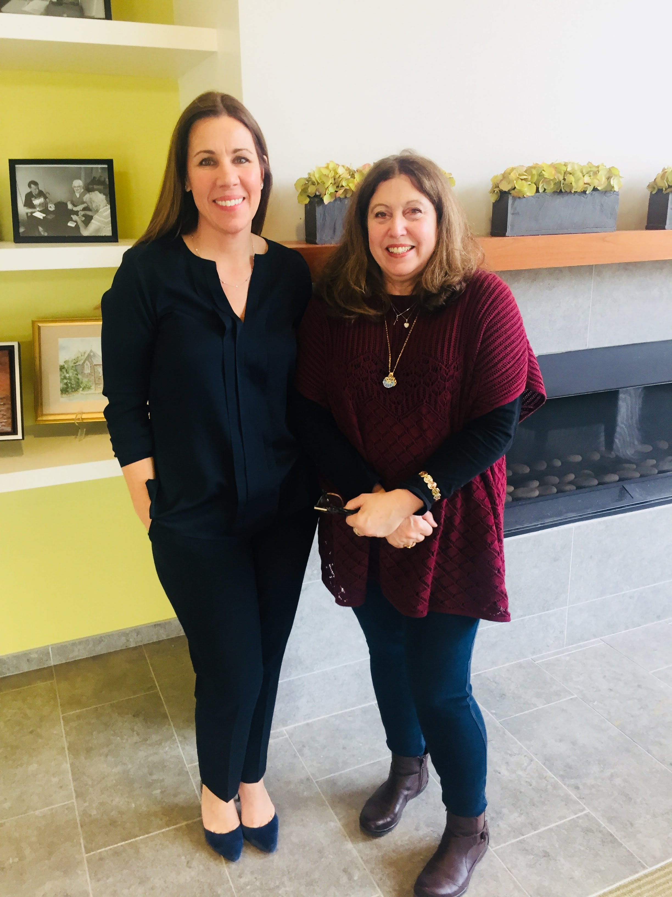

Our Community and Mission
The mission of the Darien Senior Programs is to nurture the physical, intellectual, and social well-being of the senior community aged 55 or better by providing a comprehensive and coordinated system of services that enhance individual lives, promotes well-being, dignity and independence throughout the aging process and keep members connected and integrated into the community by collaborating with other agencies and organizations who provide support programs and social services to senior, thereby enhancing the independence and wholesome lifestyle for seniors in Darien
About Your and Our Senior Center
Your Darien Senior Center is a community hub for various activities and events to enjoy with friends, family, and fellow citizens. Check out some of our offerings from our November Newsletter below. This will be updated monthly so you always know what is going on in our community!
Where Are We?
We are conveniently located at the Mather Center, on 2 Renshaw Road in Darien, next to the Department of Parks and recreation, and seconds from the Darien Public Library
About Your Staff Members
Your Director is Elizabeth paris, and your program Specialist is Marcy Rand.
-
Elizabeth "Beth" Paris, Gerontologist, has been working in the field of Aging for over 35 years. In 2009 she took the position of Senior Center Coordinator in Darien in 2014 she was promoted to Director of Senior Programs at Mather Center where she continues to developing program, activities and services for the Town of Darien and surrounding communities. Beth also serves on the Advisory Board for SWCAA South West Connecticut Area Agency on Aging. She earned her Bachelors of Arts in Mental Health and Bachelors of Science in Gerontology from the University of Bridgeport
-
Marcella Rand, MSW, has been the Senior Program Specialist with Mather Center since June of 2011. Marcella holds a B.A. in Psychology from Pine Manor College in Massachusetts and a Master degree in Social Work from Columbia University in the City of New York. She is a lifelong resident of Darien and has raised her three children in town. By increasing relationships with other professional organizations, Marcella has increased participation in the Senior Programs, implementing a wide variety of health and wellness programs as well as entertainment options for the seniors.
Get in Touch with Us
| Our Staff Members | Contact Info | Meet Marcy and Beth! |
|---|---|---|
| Elizabeth Paris, Director | paris@darienct.gov |  |
| Marcella Rand, Program Specialist | mrand@darienct.gov | |
| Eileen Manhart, Receptionist | 203-656-7490 |